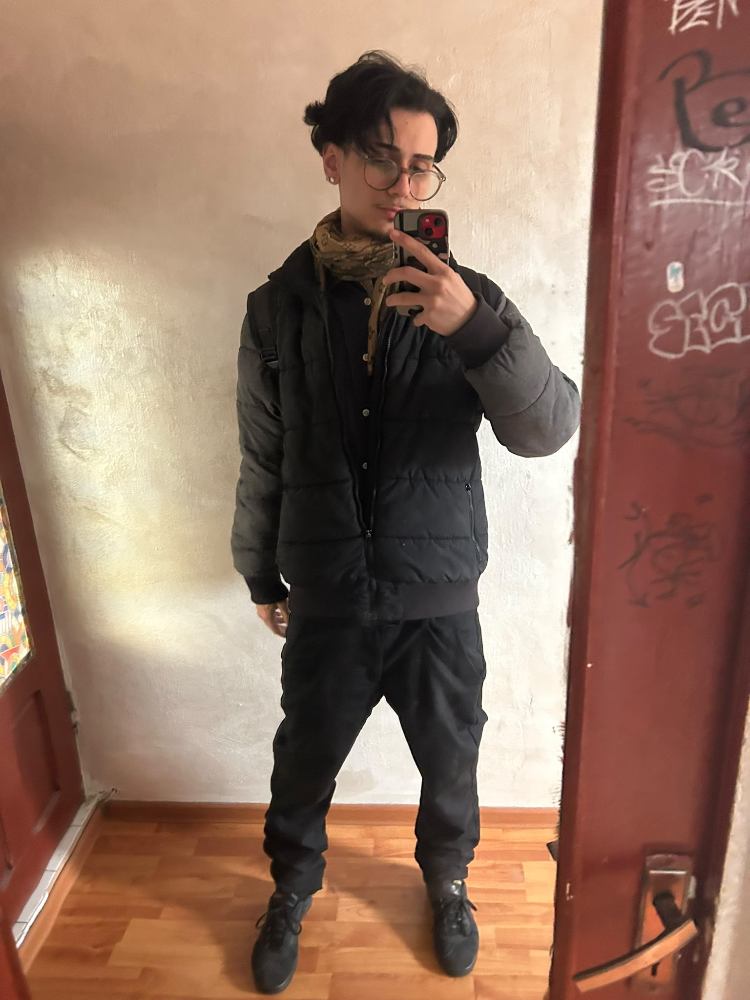
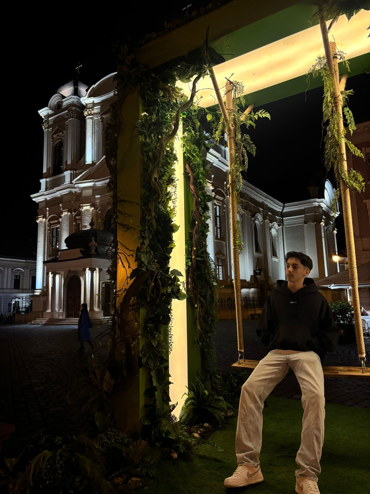
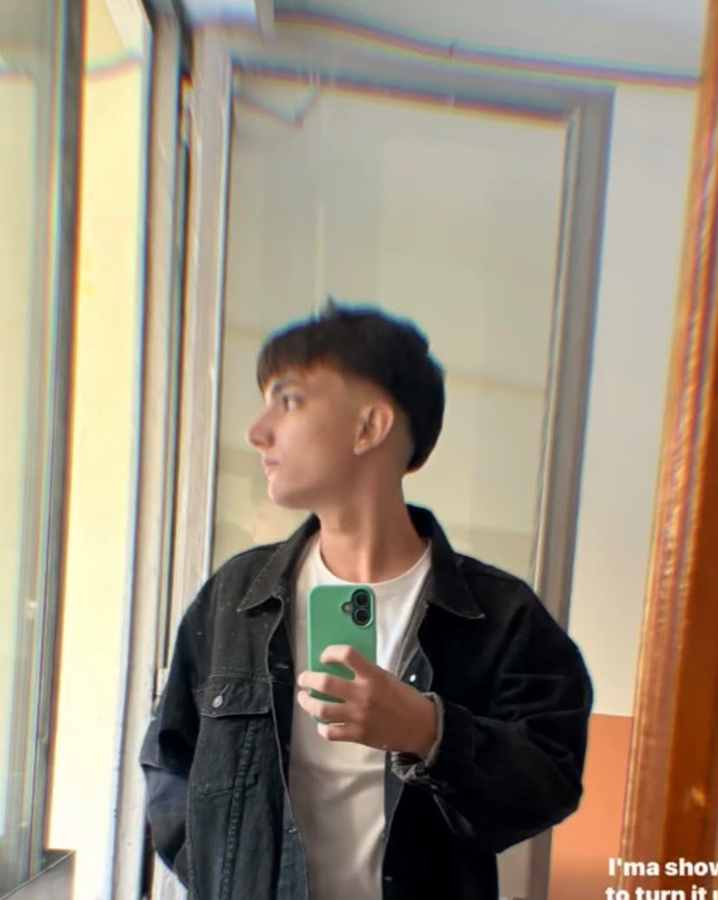

O singură folosință
Un ambalaj care ajunge la coș după câteva săptămâni nu își justifică resursele și energia folosite pentru el.
DESPRE NOI / ECOFILL
EcoFill a apărut dintr-o întrebare simplă: de ce cumpărăm același recipient, iar și iar, doar pentru a-l arunca după câteva săptămâni? Răspunsul nostru este un sistem de refill simplu, clar și ușor de integrat în rutina de zi cu zi.
„Mai puțină risipă nu înseamnă mai puțină curățenie. Înseamnă mai multă grijă.”
Direcție de proiect EcoFill
Totul a început într-o bucătărie mică, cu un raft pe care stăteau prea multe sticle de curățenie. Fiecare avea alt miros, altă promisiune și, după câteva săptămâni, același destin: coșul de reciclare.
Ne-am întrebat ce s-ar întâmpla dacă am păstra recipientul care ne place și am reumple produsul de fiecare dată când se termină. Ideea părea prea simplă ca să nu merite încercată. Așa a început EcoFill.
Nu încercăm să reinventăm curățenia. Vrem să schimbăm felul în care privim ambalajul care o însoțește: un aparat care rămâne, un cartuș care se schimbă și un gest care devine reflex.
Suntem la început. Testăm, ascultăm și rafinăm. Iar acest început contează: schimbarea reală nu vine dintr-un gest spectaculos, ci dintr-un obicei pe care poți să îl ții.
Vezi aparatul și cum funcționeazăProblema nu este doar plasticul. Este și reflexul de a cumpăra un recipient nou pentru fiecare produs, chiar și atunci când cel vechi ar putea fi folosit în continuare.
Un ambalaj care ajunge la coș după câteva săptămâni nu își justifică resursele și energia folosite pentru el.
Cumpărarea unui recipient nou pare nesemnificativă o dată. Repetată lunar, devine un comportament de consum.
Refillul mută accentul de pe obiectul care se aruncă pe recipientul care poate fi păstrat și refolosit.
Nu avem răspunsuri la tot. Avem însă o direcție clară și câteva reguli simple după care construim fiecare decizie.
Reducem ce nu este necesar și păstrăm ce contează: produsul, recipientul și gestul de a reumple.
Comunicăm simplu. Nu promitem un impact pe care nu îl putem măsura și nu ascundem ce urmează să testăm.
Fiecare detaliu este gândit să funcționeze la al doilea, al zecelea și al o sutălea ciclu de folosire.
Nu așteptăm un gest perfect. Construim unul pe care oamenii îl pot repeta fără efort.
Un produs bun nu se termină atunci când se golește.
Se termină atunci când încetezi să îl folosești.
Ordinea urmează contribuția fiecăruia la dezvoltarea produsului: de la cod și design, la testare și vocea care duce proiectul mai departe.
Textele de mai jos sunt formulări de prezentare, nu citate autobiografice.

01 / DEVConstruiește experiența digitală EcoFill: de la structura site-ului până la jocul de reumplere. Are grijă ca fiecare interacțiune să fie simplă, rapidă și să funcționeze la fel de bine pe orice ecran.
„Dacă un pas poate fi eliminat, îl eliminăm.”

02 / DESIGNA dat formă identității EcoFill: logo, paletă, tipografie și felul în care sistemul arată pe raft. Gândește fiecare detaliu ca produsul să pară la fel de curat pe cât este.
„Un produs bun ar trebui să se explice din prima privire.”
Intră acolo unde este nevoie de ajutor: testează funcțiile, verifică marginile și susține implementarea. Este al doilea set de ochi care prinde ce scapă celorlalți înainte ca totul să ajungă la public.
„Testezi o dată, înveți de fiecare dată.”

04 / GROWTHDuce povestea EcoFill mai departe: ascultă oamenii, înțelege ce îi convinge și transformă feedback-ul în mesaje clare. Se asigură că proiectul ajunge la publicul potrivit, fără promisiuni goale.
„Oamenii nu cumpără un obiect. Cumpără un obicei în care cred.”
Ai o întrebare, o idee sau vrei să afli mai multe despre direcția EcoFill? Scrie-ne. Suntem la început și ascultăm.
Scrie-neAdresă de contact provizorie: contact@ecofill.ro